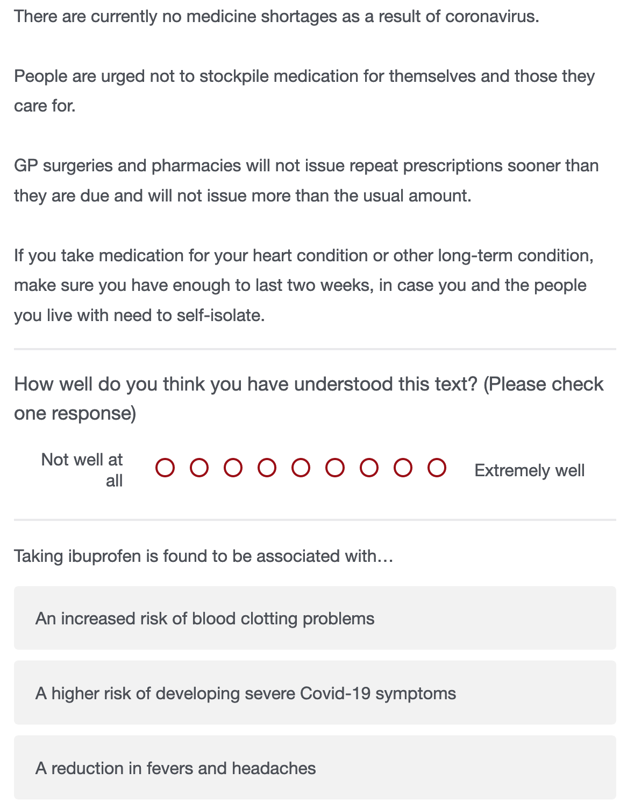
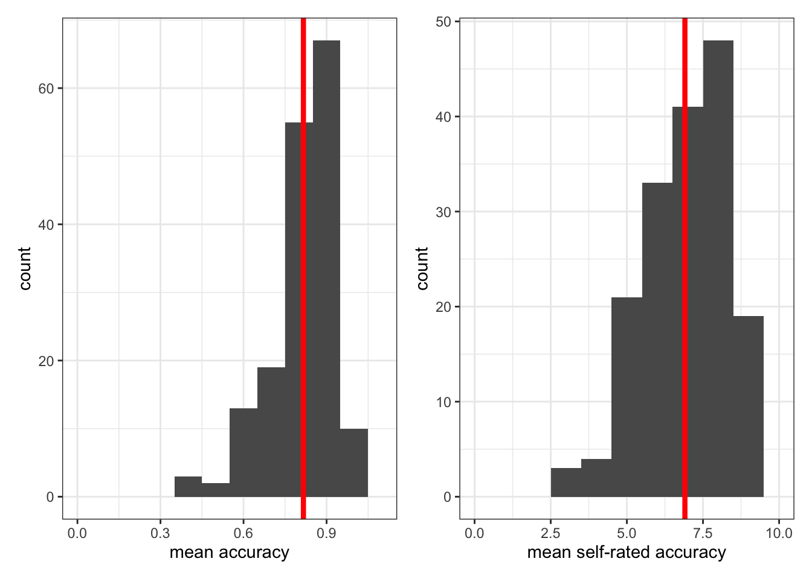
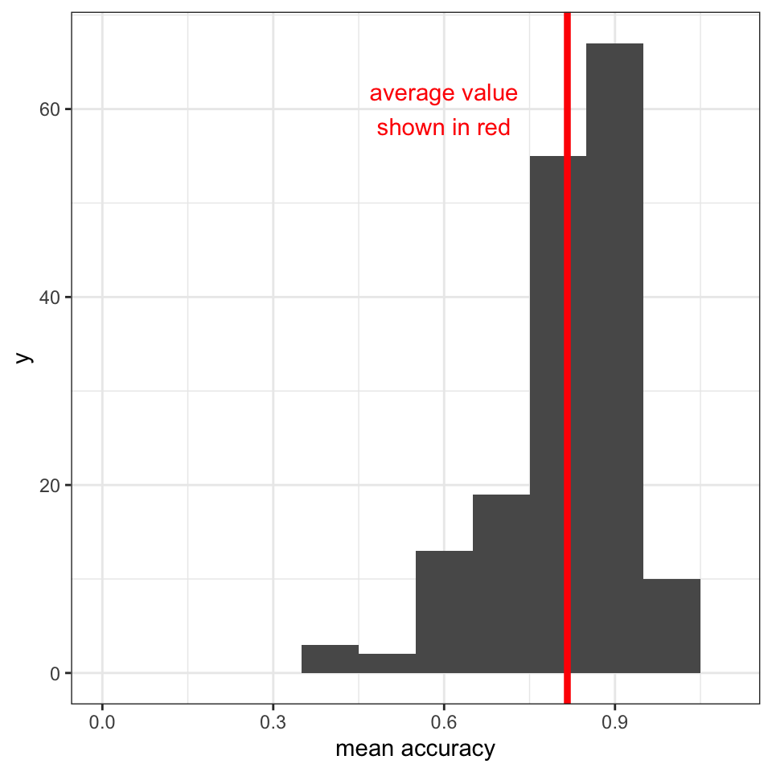
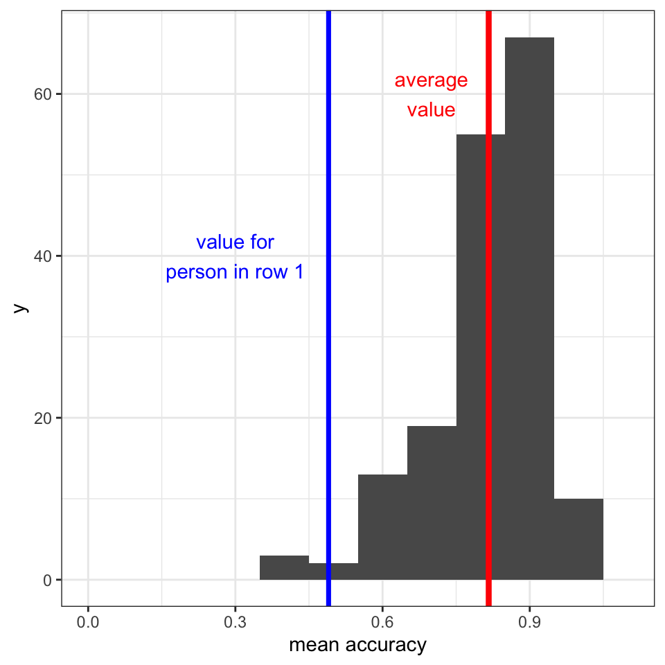
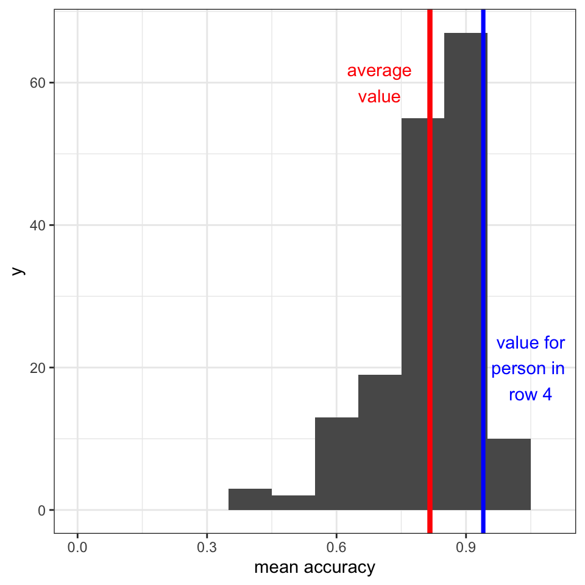
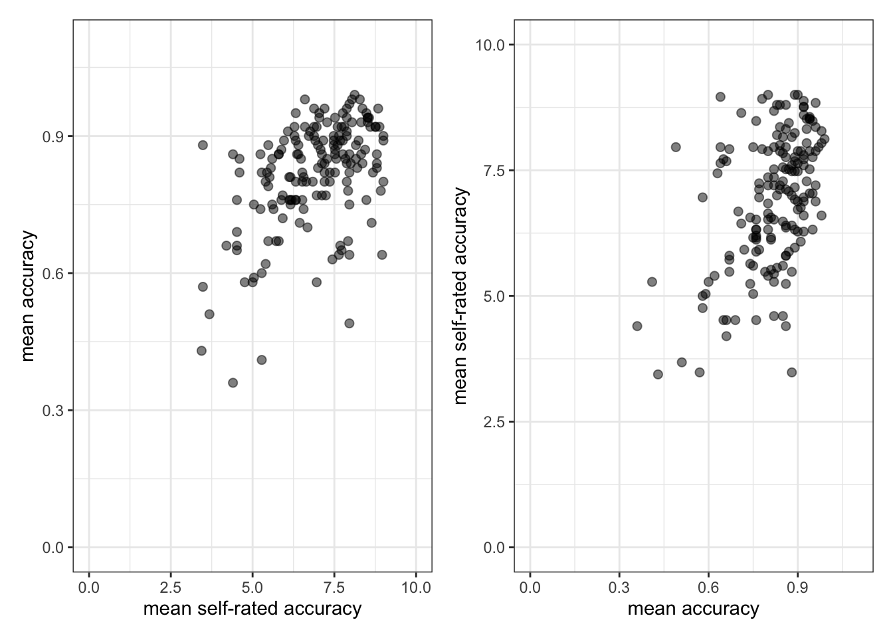
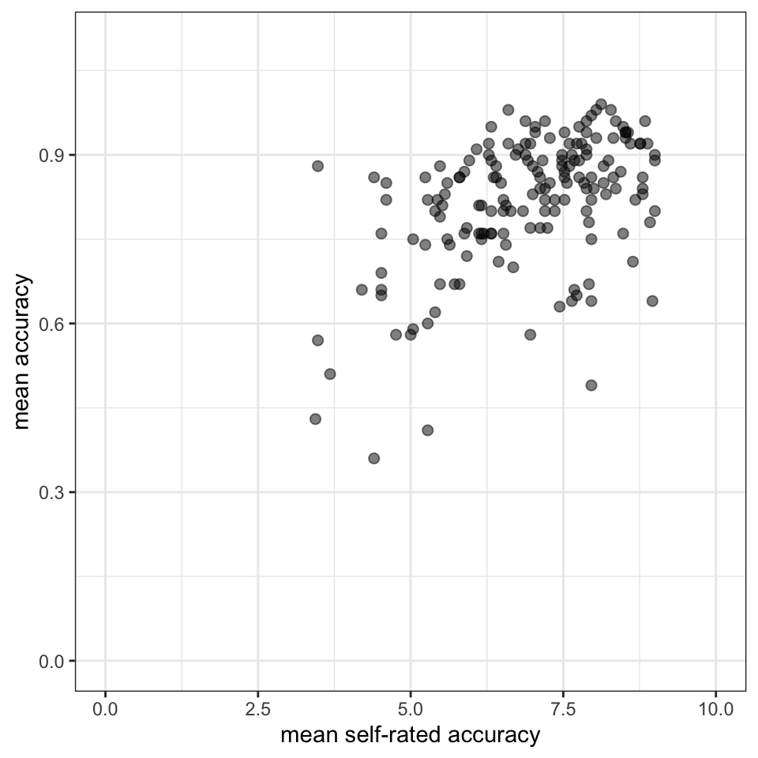
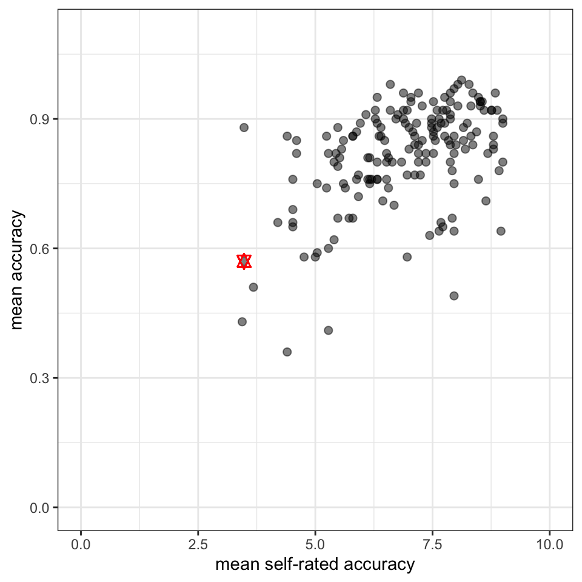

| participant_ID | mean.acc | mean.self | study | AGE | SHIPLEY | HLVA | FACTOR3 | QRITOTAL | GENDER | EDUCATION | ETHNICITY |
|---|---|---|---|---|---|---|---|---|---|---|---|
| studytwo.1 | 0.4107143 | 6.071429 | studytwo | 26 | 27 | 6 | 50 | 9 | Female | Higher | Asian |
| studytwo.10 | 0.6071429 | 8.500000 | studytwo | 38 | 24 | 9 | 58 | 15 | Female | Secondary | White |
| studytwo.100 | 0.8750000 | 8.928571 | studytwo | 66 | 40 | 13 | 60 | 20 | Female | Higher | White |
| studytwo.101 | 0.9642857 | 8.500000 | studytwo | 21 | 31 | 11 | 59 | 14 | Female | Higher | White |
| studytwo.102 | 0.7142857 | 7.071429 | studytwo | 74 | 35 | 7 | 52 | 18 | Male | Higher | White |
| studytwo.103 | 0.7678571 | 5.071429 | studytwo | 18 | 40 | 11 | 54 | 15 | Female | Further | White |
Hypotheses and associations
Warning
Under construction
Overview
Welcome to our overview of the materials you will work with in our data analysis class in the PSYC401 module, Week 7.
We are completing five classes together in weeks 6-10. These classes are designed to help students to learn about some very common and powerful psychological data analysis methods. We will focus on methods that allow us to visualize and make sense of evidence for associations between variables. Our materials are designed to help you to think about what you are doing, to understand the aims of the practical steps.
We will do this in the context of a live research project with potential real world impacts: the Clearly understood project. We will present our PSYC401 lessons in the context of this research project because we think that this context will help you to make sense of the data, and to see why we ask you to practise the skills we are teaching.
We encounter written health information all the time: on medication labels, in letters from doctors, and online when we research things we are worried about. It is not always easy to understand this information.
It is unclear how to make health communication more effective. The problem is that we are not sure how health information should be communicated so that everyone can understand it. This is why we ask the research questions:
- What person attributes predict success in understanding?
- Can people accurately evaluate whether they correctly understand written health information?
As we work together, we will be revisiting some of the ideas and techniques you have seen in previous classes. This is to give you the opportunity to consolidate your learning. We will be extending your development with some new ideas to strengthen your skills.
Our learning goals
This week, we focus on both developing your critical thinking and strengthening your practical skills in data analysis.
1. Critical thinking
- Concepts: begin with critical thinking
- Skills: developing hypotheses
2. Practical skills
- Concepts – associations: correlations, estimates and hypothesis tests
- Skills – visualizing variation and covariation
- Skills – writing the code
- Skills – estimating correlations
- Skills – hypothesis tests for correlations
- Skills – interpreting and reporting correlations
Learning resources
You will see next links to the lectures we created to explain the concepts behind the critical thinking and analysis skills we want you to develop (Section 1.3.1), then information about the practical materials we have provided to help you to practise your skills (Section 1.3.2).
All the links to the lecture videos, the lecture slides, and everything you need for your practical work can also be found in the Week 7 files folder on Moodle here
In Section 1.4, we present the lecture slide points. We do this here because we can share the code we used to generate the plots we use in some of the slides 1
Lectures
The lecture material for this week is presented in five short parts. Click on a link and your browser should open a tab showing the Panopto video for the lecture part.
You can download the slides we presented in the lecture in two different formats, depending on what you think will be most useful to you:
- Download the slides exactly as they appear in the lecture from this link. The .html file can be opened and viewed in any web browser (e.g., Chrome, Firefox, Safari).
- Or you can download a printable Word .docx presentation of the slides from this link. The .docx can be opened in Microsoft Word. The figures will not appear exactly as they do in the lecture recording because Word cannot cope with images so well but the trade-off is that you get a document you can print and edit to add notes.
Practical materials
We have collected the practical materials together into a folder.
The folder includes the data files:
study-one-general-participants.csvstudy-two-general-participants.csv
and .R code files:
401-associations-how-to.R401-associations-workbook.R
You will use these files for your practical learning.
You can download the .R files and the data .csv files in a single folder, using the link here.
Or you can download the files as individual files from the module Moodle page for PSYC401.
Once you have downloaded the file folder, you will need to upload it to the R-Studio server to access and use the R files.
The how-to guide
In the how-to guide:
401-associations-how-to.R
we show you how to do everything you need to do in the practical workbook (see Section 1.3.3). The guide comprises an .R file 401-associations-how-to.R with code and advice.
The code in the .R file was written to work with the data file
study-one-general-participants.csv.
Tip
Work through the steps in the
how-toguide first, this practice will help you to understand what you need to do for theworkbooktasks.The
how-toguide and theworkbookhave similar structures. This is intentional: so that you can copy and adapt code from thehow-toguide to do the practical tasks in theworkbook.
The workbook
In the workbook:
401-associations-workbook.R
you will work with the data file
study-two-general-participants.csv
We split .R scripts into parts, tasks and questions:
- different parts for different phases of the analysis workflow;
- different tasks for different steps in each phase;
- different questions to examine different ideas or coding steps.
In the week 7 workbook, we are going to work through the following workflow steps:
- Empty the R environment – using
rm(list=ls()) - Load relevant libraries – using
library() - Read in the data file – using
read_csv() - Inspect the data – using
head()andsummary() - Change the type classification of a variable in the data – using
as.factor() - Draw histograms to examine the distributions of variables – using
ggplot()andgeom_histogram() - Draw scatterplots to examine the association between pairs of variables – using
ggplot()andgeom_point() - Estimate and test the correlations between pairs of variables – using
cor.test()
The activity 401-associations-workbook.R file takes you through the tasks, one by one.
If you are unsure about what you need to do, check the advice in 401-associations-how-to.R.
You will see that you can match a task in the activity to the same task in the how-to. The how-to shows you what function you need and how you should write the function code. You will need to change the names of the data-set or the variables to complete the tasks in the activity.
This process of adapting demonstration code is a process critical to data literacy and to effective problem solving in working with data in psychological science.
The data files
Each of the data files we will work with has a similar structure.
Here are what the first few rows in the data file study.two.gen looks like:
You can see the columns:
participant_IDparticipant codemean.accaverage accuracy of response to questions testing understanding of health guidancemean.selfaverage self-rated accuracy of understanding of health guidancestudyvariable coding for what study the data were collected inAGEage in yearsHLVAhealth literacy test scoreSHIPLEYvocabulary knowledge test scoreFACTOR3reading strategy survey scoreGENDERgender codeEDUCATIONeducation level codeETHNICITYethnicity (Office National Statistics categories) code
The answers
After the practical class, you will be able to download the answers version of the workbook here.
The answers version will present my answers for questions, and some extra information where that is helpful.
Lecture notes
Some people find it easier to read notes than to watch video recordings. This is why we also include the lecture notes here.
Tip
In these notes, I provide notes on the code steps that result in the plot.
- Click on the
Notestab to see them.
Better methods can’t make up for mediocre theory
- Previously – in week 6: I talked about improving science through open reproducible methods but we cannot make progress without better theory and data [@smaldino2019better]
- We want open reproducible findings but we do not just want reproducibility
- We want to make sense of people in useful ways
Open, reproducible, methods are not enough
- Now: we need to think causally about predictions and about measurement
- We discuss health comprehension project to demonstrate critical self-reflection
- For useful hypotheses, we need better theory so we can build clear testable predictions from explicit assumptions
- And with better models, we need better measurement because if we cannot reliably measure something then it is hard to build a theory about it
Critical thinking and you
- Students and colleagues almost never have problems coding analyses in R
- The challenges are almost always located in the critical reflection you must do in order to develop sensible analysis, and to interpret the analysis results
- So we need to start by highlighting the work of critical reflection in data analysis
Why most psychological research findings are not even wrong
- As you will know, it is often difficult to identify a claim in an article [@scheel2022]
- Here are some questions you can ask to decide if a claim you read or make is clear:
- Is the claim stated unambiguously: can the claim support or contradict (or is it uncertain about) a prediction?
- Can you understand how we get back from the claim to the data, given assumptions about measurement, sampling and procedure?
Why hypothesis testers should spend less time testing hypotheses
- The response to crisis has been to teach and use better methods
- This improvement reveals a core problem [@scheel2021]: we often work to test hypotheses but our hypotheses are often undeveloped
- We train hypothesis testing but we also need to train hypothesising:
- how to measure, operationalize, and how to decide if hypothesis is corroborated or not
Tip
We want to be capable of being wrong
Statistical rituals largely eliminate critical statistical thinking
- Traditionally, students learn statistical tests, and learn to identify if a test statistic is significance or not
- If we do not also talk about what is actually observed, and whether or how – or why – it is or is not compatible with theory based predictions then we do ritual not science [@Gigerenzer2004]
- This is a problem: the focus on anything-but-null allows us to build or accommodate vague theories that can never be wrong
We need to think about the derivation chain
Here’s a toolkit for thinking productively about your hypotheses
The derivation chain [@meehl1990; @scheel2021]
- Develop your theory: the concepts, and the assumptions about causality
- Specify how psychological concepts will be measured
- Identify auxiliary assumptions about how we get from theoretical concepts to observable data
- Identify theoretical predictions
- Link theoretical predictions to specific statistical tests that may support or contradict them
Valid measures
- We often teach and learn about different kinds of validity but the key idea is simple [@borsboom2004]
a test is valid for measuring an attribute if and only if (a) the attribute exists and (b) variations in the attribute causally produce variations in the outcomes of the measurement procedure
- We want to work with valid measures but validity requires explaining: (Q.1) Does the thing exist in the world? (Q.2) Is variation in that thing be reflected in variation in our measurement?
Summary: our critical thinking checklist
- What is our (causal) theory?
- What measures are we using, why?
- What is our specific prediction, why?
- Does the prediction relate to sign and to magnitude?
- What analysis can test this prediction, why?
- How will our results affect our beliefs, why?
Case study: the health comprehension project
- Because the important questions concern how psychologists ask and answer research questions
- We will work in the context of a live research project: What makes it easy or difficult to understand written health information?
Why this? We don’t really know what makes it easy or difficult to understand advice about health
Health comprehension project: impacts
- We are working to help improve communication
- With partners at Vienna Business University, Kantar Public, and the London School of Economics
- Our work has implications for: business communication; understanding reading development; marketing communication
Health comprehension project: questions and analyses
- Our research questions are:
- What person attributes predict success in understanding?
- Can people accurately evaluate whether they correctly understand written health information?
- These kinds of research questions can be answered using methods like correlation, linear models
Health comprehension project – relevance: methods you will use in your professional work
- We got funding to collect data online using online Qualtrics questionnaire surveys
- We tested people on a range of dimensions using standardized ability and our own knowledge tests
- Many of you will go on to work with online surveys, and with data from standardized ability measures
Health comprehension project: samples
- We collected data in two studies in 2020: using the online Prolific platform to recruit participants
- We did several replication studies in student-led projects: we analyze the data in class
Health comprehension project: why it is a case study
- The health project has strengths and limitations
- We show how to identify and critically evaluate this project so you can do the same for your work

Cognitive process theory of comprehension success
- When skilled adult readers read and try to understand written text [@kintsch1994]
- They must recognize and access the meanings of words
- Then use knowledge and reasoning to build an interpretation of what is in the text
- Based on connecting the information in the text with what they already know
Individual differences theory of comprehension success
- Successfully understanding text depends on (1.) language experience and (2.) reasoning ability [@freed2017]
Where the data come from: our measures
- We measure reading comprehension: asking people to read text and then answer multiple choice questions
- We measure background knowledge: vocabulary knowledge (Shipley); health literacy (HLVA)
- We ask people to rate their own understanding of each text
Example critical evaluation questions
- Are multiple choice questions good ways to probe understanding? – What alternatives are there?
- Are tests like the Shipley good measures of language knowledge? – What do we miss?
- Can a person accurately evaluate their own understanding? – Can we rely on subjective judgments?
Relevance to you
- Even very good students sometimes do not question the validity of measures:
- Not asking questions like this has a real impact on the value of the interpretation of results
- Here, we are looking ahead to the critical thinking you will need to do for your dissertations
Talking about the relationships between variables
- Psychologists and people who work in related fields often want to know about associations
- Is variation in observed values on one dimension (e.g., comprehension) related to variation in another dimension (e.g., vocabulary)?
- Do values on both dimensions vary together?
The language in this area can vary: we will be consistent but you need to be aware of the different terms
- Outcome \(=\) response \(=\) criterion \(=\) dependent variable
- Predictor \(=\) covariate \(=\) independent variable \(=\) factor
- Linear model \(=\) regression analysis \(=\) regression model \(=\) multiple regression
Let’s look at the data we will use
- First, we need to read the data into R
study.one.gen <- read_csv("study-one-general-participants.csv")- Next, we should take a look at the data: you can open the data-set in Excel or you can use the
headcommand to show the first few rows in - The person in row 1 has
ETHNICITYWhite, isAGE34 years, scored 33 onShipleyvocabulary, scored 7 onHLVAhealth literacy and, on average, self-rated their understanding of health information as 7.96 (so 8/9,mean.self) while scoring 0.49 accuracy in tests of understanding (49%mean.acc)
study.one.gen %>%
select(mean.acc, mean.self, HLVA, SHIPLEY, AGE, ETHNICITY) %>%
head(n = 4)# A tibble: 4 × 6
mean.acc mean.self HLVA SHIPLEY AGE ETHNICITY
<dbl> <dbl> <dbl> <dbl> <dbl> <fct>
1 0.49 7.96 7 33 34 White
2 0.85 7.28 7 33 25 White
3 0.82 7.36 8 40 43 White
4 0.94 7.88 11 33 46 White Destination correlation: where the correlation number comes from
- Covariance
\[COV_{xy} = \frac{\sum(x - \bar{x})(y - \bar{y})}{n -1}\]
- If we want to estimate the correlation between two sets of numbers: \(x\) and \(y\)
- We want to know if variation in \(x\) (given by \(x - \bar{x}\))
- Varies together with variation in \(y\) (given by \(y - \bar{y}\))
Destination correlation: where the correlation number comes from
- Covariance divided by standard deviations
\[r = \frac{COV_{xy}}{s_xs_y}\]
- Because the two sets of numbers can be on different scales: e.g.,
SHIPLEYout of 40;mean.acc(proportion, out of 1) - And because covariance values depend on the scales
- To correlations easier to compare, we need to remove scale by dividing by the variables standard deviations
Let’s think about an example correlation
- Research question: Can people accurately evaluate whether they correctly understand written health information?
- Measurement: Someone with higher scores on tested accuracy of understanding will also present higher scores on their ratings of their own understanding
- Statistical prediction: We predict that
mean.accandmean.selfscores will be associated - Test: If the prediction is correct,
mean.accandmean.selfscores will be correlated
Distributions: How do scores vary?

library(patchwork)
library(tidyverse)
p.acc <- study.one.gen %>%
ggplot(aes(x = mean.acc)) +
geom_histogram(binwidth = .1) +
geom_vline(xintercept = mean(study.one.gen$mean.acc),
size = 1.5, colour = "red") +
xlab("mean accuracy") +
xlim(0, 1.1) +
theme_bw()
p.self <- study.one.gen %>%
ggplot(aes(x = mean.self)) +
geom_histogram(binwidth = 1) +
geom_vline(xintercept = mean(study.one.gen$mean.self),
size = 1.5, colour = "red") +
xlab("mean self-rated accuracy") +
xlim(0, 10) +
theme_bw()
p.acc + p.selfLet’s go through the code step-by-step.
Tip
- Here the code is broken down, line by line, and each line is numbered.
- This presentation style is done to make it easier for you to see what each step is doing.
- Notice that when we use
p.acc <- study.one.genwe tell R to first create the plot (giving it the namep.acc) but to not show it yet.
library(patchwork)andlibrary(tidyverse): We need to use {tidyverse} library functions to construct the plots and {patchwork} library functions to assemble the plots into a grid showing the plots next to each other. We use thelibrary()function to get these libraries.- We construct two plots. We call the plots
p.accandp.self. Each plot is constructed in a similar way so we explain the main steps for one plot. The plots are constructed but not shown until the last line of code is run. p.acc <- ...creates a plot calledp.acc, using the processes that are specified in the next lines of code that follow.... <- study.one.gentells R that we are working with the data-setstudy.one.genthat we read in earlier.%>%is called thepipeand it is code telling R to work with thestudy.one.gendata in the next plot processing steps.ggplot(aes(x = mean.acc)) +takes thestudy.one.gendata and asks R to use theggplot()function to produce a plot.aes(x = mean.acc)tells R that in the plot we want it to show themean.accvariable values as locations on the x-axis: this is the aesthetic mapping.geom_histogram(binwidth = .1) +tells R to produce a histogram then add a step, next.geom_vline(...) +tells R we want to draw a vertical line.xintercept = mean(study.one.gen$mean.acc), ...tells R to draw the vertical line at the mean value of the variablemean.accin thestudy.one.gendata-set.size = 1.5, colour = "red"tells R we want the vertical line to be red, and 1.5 times the usual size.xlab("mean accuracy") +tells R we want the x-axis label to say that the plot is of"mean accuracy".xlim(0, 1.1) +sets limits on the minimum and maximummean accuracyvalues shown in the plot.theme_bw()lastly, we change the theme.- Then we have code to construct the second plot
p.self. p.acc + p.self: tells R to put the two plots together so they appear side-by-side in a grid for easy comparison.
In using pipes in the code, I am structuring the code so that it works — and is presented — in a sequence of steps. There are different ways to write code but I find this way easier to work with and to read and I think you will too.
What you can see is that each line ending in a %> pipe passes something on to the next line. A following line takes the output of the process coded in the preceding line, and works with it.
Each step is executed in turn, in strict sequence. This means that if I delete the line study.one.gen %>% then the following lines cannot work because the ggplot() function will be looking for a variable average that does not yet exist.
Tip
- You can see that in the data processing part of the code, successive steps in data processing end in a pipe
%>%. - In contrast, successive steps of the plotting code add
ggplotelements line by line with each line (except the last) ending in a+.
Notice that none of the processing steps actually changes the dataset called study.one.gen. The results of the process exist and can be used only within the sequence of steps coded to produce the plots.
A histogram is a useful way to show the distribution of values
- We have a sample of accuracy scores:
- Mean accuracy scores vary between 0.0 and 1.0
- We draw the plot by grouping together similar values in bins
- Heights of bars represent numbers of cases with similar values in same bin

study.one.gen %>%
ggplot(aes(x = mean.acc)) +
geom_histogram(binwidth = .1) +
geom_vline(xintercept = mean(study.one.gen$mean.acc),
size = 1.5, colour = "red") +
annotate("text", x = 0.6, y = 60,
colour = "red",
label = "average value\nshown in red") +
xlab("mean accuracy") +
xlim(0, 1.1) +
theme_bw()We go through the code line by line. It will be useful to identify some differences between this chunk of code and the previous chunk of code.
- We are going to use {tidyverse} library functions to construct the plots and {patchwork} library functions to assemble the plots into a grid. I assume you have already run the
library()function to get these libraries. We do not need to do it again in the same R session. - We construct one plot here. We do not give it a name. Run the code and R will show the plot in the plot window immediately.
study.one.gen %>%tells R that we are working with the data-setstudy.one.genthat we read in earlier.%>%is thepipeand it is code telling R to work with thestudy.one.gendata in the next plot processing steps.ggplot(aes(x = mean.acc)) +takes thestudy.one.gendata and asks R to use theggplot()function to produce a plot.aes(x = mean.acc)tells R that in the plot we want it to show themean.accvariable values as locations on the x-axis: this is the aesthetic mapping.geom_histogram(binwidth = .1) +tells R to produce a histogram then add a step, next.geom_vline(...) +tells R we want to draw a vertical line.xintercept = mean(study.one.gen$mean.acc), ...tells R to draw the vertical line at the mean value of the variablemean.accin thestudy.one.gendata-set.size = 1.5, colour = "red"tells R we want the vertical line to be red, and 1.5 times the usual size.annotate("text", ...** tells R to write some text.x = 0.6, y = 60** tells R where to write the text.colour = "red"** tells R what colour to write the text.label = "average value\nshown in red"** tells R what text to write.xlab("mean accuracy") +tells R we want the x-axis label to say that the plot is about"mean accuracy".xlim(0, 1.1) +sets limits on the minimum and maximummean accuracyvalues shown in the plot.theme_bw()lastly, we change the theme.
- You can read about the new
annotate()function here.
When we talk about variance we are talking about how values vary in relation to the mean for the sample
- The average of these mean accuracy scores is marked with a red line where \(\bar{x} =\) 0.8
- The accuracy score for the person in row 1 is located at \(x = .49\), marked in blue

We are talking about how values vary in relation to the mean for the sample
- In comparison, the mean accuracy score for the person in row 4 is located at \(x = .94\), marked in blue

The basic question when we examine covariance: do values vary together?
- If the person at row 1 has a
mean.accuracyscore of .49, lower than the average - And the person at row 4 has a
mean.accuracyscore of .94, higher than the average - What will their
mean.selfscores be: will they be higher or lower than the averagemean.selfscore?
We can use scatterplots to examine associations
- Is variation in the mean accuracy of understanding (of health information) associated with variation in mean self-rated accuracy of understanding?

mean.acc) vary together with values on mean self-rated accuracy (mean.self) for the participants in this samplep.acc <- study.one.gen %>%
ggplot(aes(x = mean.self, y = mean.acc)) +
geom_point(size = 2, alpha = .5) +
ylab("mean accuracy") +
xlab("mean self-rated accuracy") +
xlim(0, 10) + ylim(0, 1.1) +
theme_bw()
p.self <- study.one.gen %>%
ggplot(aes(y = mean.self, x = mean.acc)) +
geom_point(size = 2, alpha = .5) +
xlab("mean accuracy") +
ylab("mean self-rated accuracy") +
ylim(0, 10) + xlim(0, 1.1) +
theme_bw()
p.acc + p.self- We are going to use {tidyverse} library functions to construct the plots and {patchwork} library functions to assemble the plots into a grid. I assume you have already run the
library()function to get these libraries. We do not need to do it again in the same R session. - We construct two plots. We call the plots
p.accandp.selfagain. Each plot is constructed in a similar way so we explain the main steps for one plot. The plots are constructed but not shown until the last line of code is run. p.acc <- ...creates a plot calledp.acc, using the processes that are specified in the next lines of code that follow.... <- study.one.gentells R that we are working with the data-setstudy.one.genthat we read in earlier.%>%is called thepipeand it is code telling R to work with thestudy.one.gendata in the next plot processing steps.ggplot(...) +takes thestudy.one.gendata and asks R to use theggplot()function to produce a plot.aes(x = mean.self, ...)tells R that in the plot we want it to show themean.selfvariable values as horizontal (left to right) locations on the x-axis: this is one aesthetic mapping.aes(... , y = mean.acc)tells R that in the plot we want it to show themean.accvariable values as vertical (low to high) locations on the y-axis: this is the second aesthetic mapping.aes(x = mean.self, y = mean.acc)thus encodes two aesthetic mappings, telling R the position of the things it will draw (it will draw points, next): the vertical height, and the horizontal left-to-right position.geom_point(...)tells R to produce a scatterplot, representing data values as points.size = 2, alpha = .5tells R we want the points to be 2 times the usual size withsize = 2, and half the usual level of opacity (i.e. how solid the colour is) withalpha = .5.ylab("mean accuracy") +tells R we want the y-axis label to say that the plot is of"mean accuracy".xlab("mean self-rated accuracy") +tells R we want the y-axis label to say that the plot is of"mean self-rated accuracy".ylim(0, 10) + xlim(0, 1.1) +sets limits on the minimum and maximummean accuracyandmean self-rated accuracyvalues shown in the plot.theme_bw()changes the theme.- Then we have code to construct the second plot
p.self. p.acc + p.self: tells R to put the two plots together so they appear side-by-side in a grid for easy comparison.
- You can read about the
geom_point()function here.
A scatterplot is a useful way to examine if the values of two or more variables vary together
- Mean accuracy scores vary between 0.0 and 1.0
- The height of each point shows the observed value of accuracy on the y-axis
- Self-rated accuracy scores vary between 1 and 9
- The horizontal position of each point shows the observed value of self-rated accuracy on the x-axis

We use mostly the same code to draw Figure 8, compared to the code we used to draw Figure 7, but there is one difference. I do not walk through every line of code, here, but highlight the difference.
- We construct one plot here. We do not give it a name. Run the code and R will show the plot in the plot window immediately.
study.one.gen %>%tells R that we are working with the data-setstudy.one.genthat we read in earlier.ggplot(aes(x = mean.self, y = mean.acc)) +takes thestudy.one.gendata and asks R to use theggplot()function to produce a plot.aes(x = mean.self, y = mean.acc)thus encodes two aesthetic mappings, telling R the position of the things it will draw (it will draw points, next): the vertical height, and the horizontal left-to-right position.
We can focus in one point, showing the data for one person.
- We have a sample of 170 people
- For each person, we have a value for the mean accuracy and a paired value for the mean self-rated accuracy
- Each point shows the paired data values for a person
- In red: someone scored 3.48 on mean self-rated accuracy, 0.57 on mean accuracy

The R code for a correlation test, bit by bit
- We specify the
cor.testfunction, and name one variablestudy.one.gen$mean.acc - Then we name the second variable
study.one.gen$mean.self - Last we specify the correlation
method = "pearson"because we have a choice (we can apply other methods to estimate the correlation, e.g., Spearmans)
Identifying the key information in the results from one correlation test
- We look at the value of the correlation (here,
cor) and the p-value - We can see that the correlation statistic is positive
cor = .4863771which we round to \(cor = .49\) - And
p-value = 2.026e-11indicating that the correlation is significant \(p < .001\)
cor.test(study.one.gen$mean.acc,
study.one.gen$mean.self,
method = "pearson")
Pearson's product-moment correlation
data: study.one.gen$mean.acc and study.one.gen$mean.self
t = 7.1936, df = 167, p-value = 2.026e-11
alternative hypothesis: true correlation is not equal to 0
95 percent confidence interval:
0.3619961 0.5937425
sample estimates:
cor
0.4863771 Reporting a correlation
- Usually, we report a correlation like this:
Mean accuracy and mean self-rated accuracy were significantly correlated (\(r (167 \text{ df}) = .49, p < .001\)). Higher mean accuracy scores are associated with higher mean self-rated accuracy scores.
Interpreting correlations with the help of visualization
- The correlation statistic is positive in sign and moderate in size, about \(r = .49\)
- We can see that higher mean accuracy (
mean.acc) scores are associated with higher mean self-rated accuracy (mean.self) scores

What will different kinds of correlations look like?
We can simulate data to demonstrate [what scatterplots look like if]: (left) the correlation is positive, \(r = .5\); (right) the correlation is negative, \(r = -.5\)
![The figure shows two scatterplots showing how simulated data values on mean accuracy and mean self-rated accuracy *could* vary together given positive or negative correlations. Each plot shows points, where each point indicates the pair of scores corresponding to the 'mean accuracy' and the 'mean self-rated accuracy' recorded for each participant in a simulated data-set. The plot on the left shows the scatter of points when data are simulated assuming r = .5. The plot on the left shows the scatter of points when data are simulated assuming r = -.5.](visualization-intro_files/figure-html/fig-study-one-gen-scatter-acc-self-grid-simulated-signs-1.png)
We can also imagine – again with simulated data – what correlations of increasing size might look like
- Notice how, as you compare the plots, going from left to right
- As the correlation increases, the points cluster together more closely

Summary
- We are often interested in whether or how variation in the values of two variables are associated
- We can visualize the distribution of values in any one variable using histograms
- We visualize the association of values in two variables using scatterplots
- We conduct correlation tests to examine the sign (positive or negative) and the strength of the association
- But we always need to think about our research questions, about where our data come from and about whether our measures are any good
Look ahead: growing in independence
- Every problem you ever have: someone has had it before, solved it, and written a blog (or tweet or toot) about it
Look ahead: the revolution in knowledge and you
- R is free open statistical software: everything you use is contributed, discussed and taught by a community of R users online, in open forums
- Learning to navigate this knowledge is an introduction to the future of knowledge sharing
Footnotes
We write the slides and this book in Quarto in R-Studio. Quarto scripts can be rendered as .html to share web-books like this one, or to share slides like those we use in presenting the lecture. One advantage of using Quarto is that we can share a plot and the code we used to generate the plot in the same page.↩︎